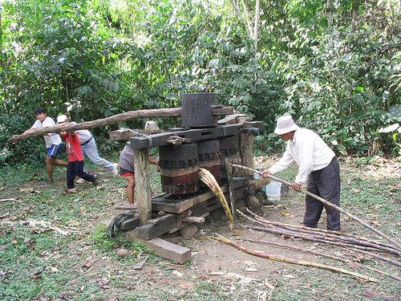

Sequía en Suramérica: La peor sequía en décadas crea pérdidas millonarias e incendios en Suramérica
Agencia EFE
La sequía que sufren algunos países de Suramérica, la peor en décadas, está provocando millonarias pérdidas en el sector agropecuario, principalmente en Argentina y Paraguay, e incendios que han destruido miles de hectáreas en Uruguay y Chile. Algunas de las consecuencias de la ausencia de lluvias son las siguientes: muerte de reses en Argentina, caída de la producción lechera en Uruguay y de la de soja en Paraguay, graves incendios en Chile, niveles críticos en las represas de agua del altiplano boliviano y despidos en Brasil por la cancelación de pedidos de maquinaria agrícola.
Situación de la sequía en Argentina
Un informe privado difundido hoy advierte que la situación es particularmente delicada en Argentina, donde la actual sequía es la más grave que se recuerda en medio siglo y puede ocasionar un recorte de 1.6 puntos porcentuales en la previsión oficial de crecimiento económico, que es del 4% en 2009. Según los cálculos de la Sociedad Rural Argentina, una de las cuatro mayores entidades agropecuarias del país, el Producto Interior Bruto crecerá este año apenas un 2.4%, hasta los 393.938 millones de pesos (112.553.7 millones de dólares), por efecto de la sequía. La entidad de la Sociedad Rural Argentina aclara que su cálculo no contempla "el efecto multiplicador negativo producto de la menor actividad económica" en ámbitos como la prestación de servicios agropecuarios, el transporte de granos o la molienda.
Las patronales agrarias afirman que hasta ahora han muerto unas 600.000 reses y se ha perdido entre el 15 y el 20 por ciento de los cultivos, aunque el balance final puede afectar al 30 por ciento de la producción de granos. Por su parte, las autoridades declararon la semana pasada el estado de emergencia y la presidenta argentina, Cristina Fernández, anunció un paquete de medidas para aliviar al campo, como la concesión de créditos blandos para maquinaria agrícola y la limitación de los precios de los fertilizantes.
Situación de la sequía en Uruguay
En Uruguay este año se perderá, a consecuencia de la sequía, entre el 25 y el 29 por ciento de la cabaña de vacas lecheras, entre animales muertos y reses que no producirán porque no hay